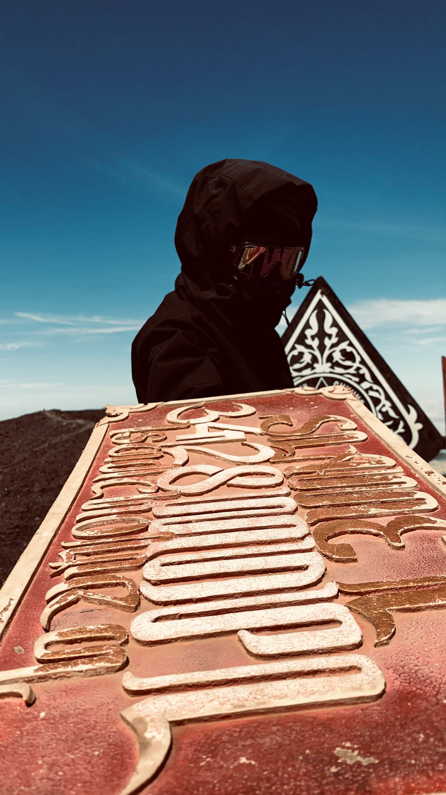
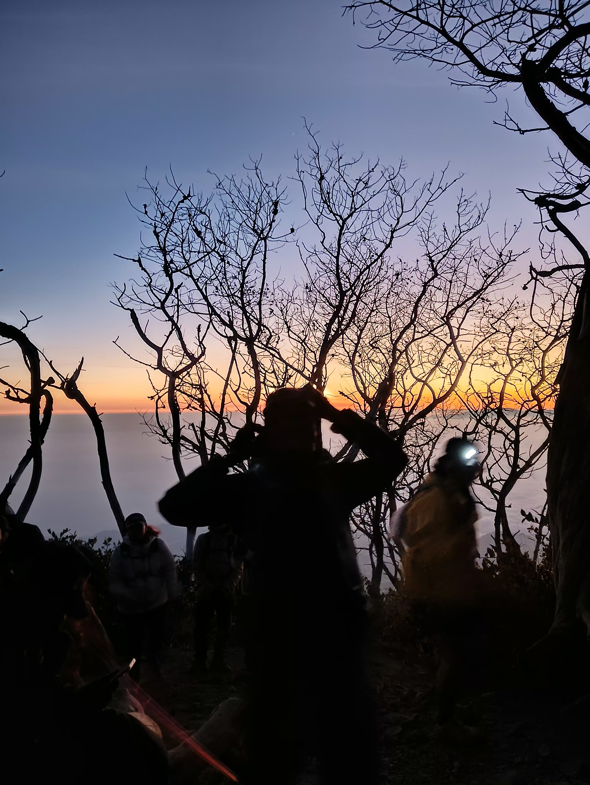
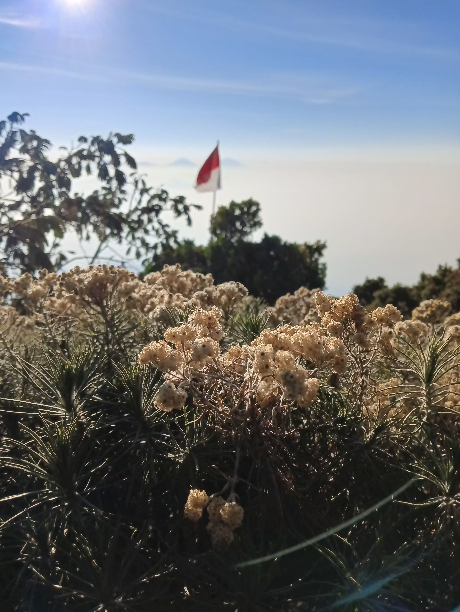
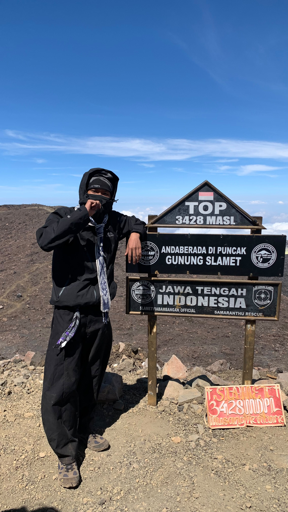
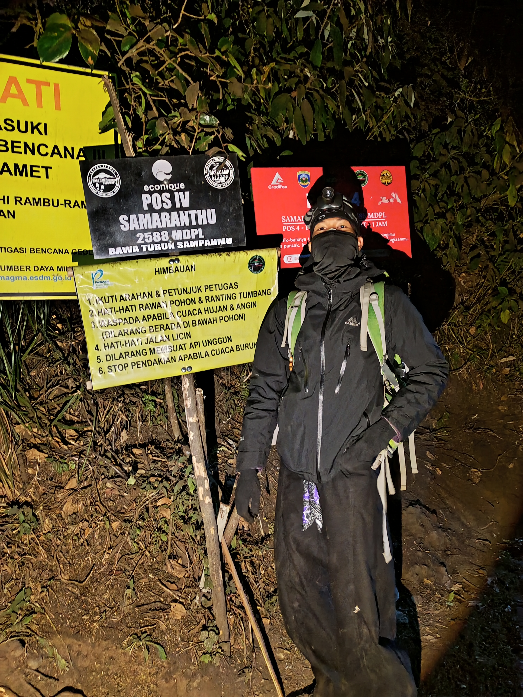
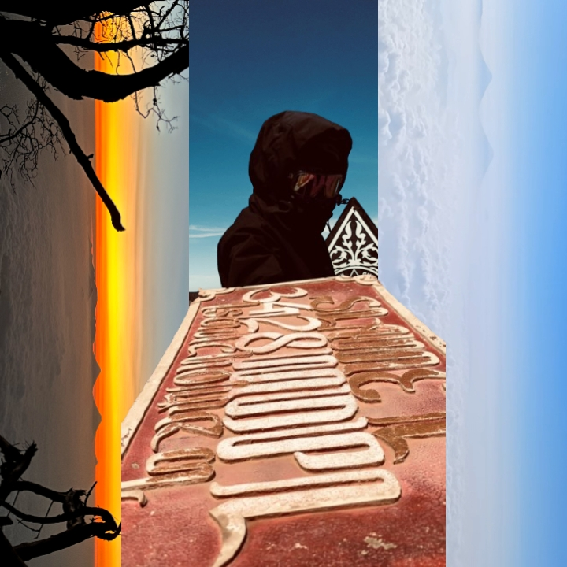

A LITTLE COLLECTION OF MEMORIES
About You
somewhere in time, forever in memory.

PRESS PLAY & REMEMBER
Little Moments
A collection of places, little moments, and memories I wish I could visit one more time.





← SWIPE TO SEE MORE →
A Journey to Remember
Mount Slamet · Bambangan
Maybe the best part was never only the destination, but every little moment along the way.
Someday, Somewhere
Suatu hari nanti, aku akan menginjakkan kaki di tempat-tempat
indah di berbagai penjuru dunia. Aku akan menciptakan banyak
kenangan baik di setiap perjalanan, mengabadikan momen,
dan menyimpannya dengan rapi dalam foto maupun cerita.
Bukan semata untuk dipamerkan, tetapi sebagai pengingat
bahwa mimpi-mimpi yang pernah kutuliskan hari ini
benar-benar bisa menjadi nyata.
Dear Future Me
Semoga kita masih menjadi seseorang yang berani bermimpi,
berani melangkah, dan tidak lupa menikmati perjalanan
di tengah kesibukan mengejar tujuan.
Teruslah berjalan. Masih banyak cerita yang belum ditulis.
Another Little Soundtrack
A song to keep another memory alive.